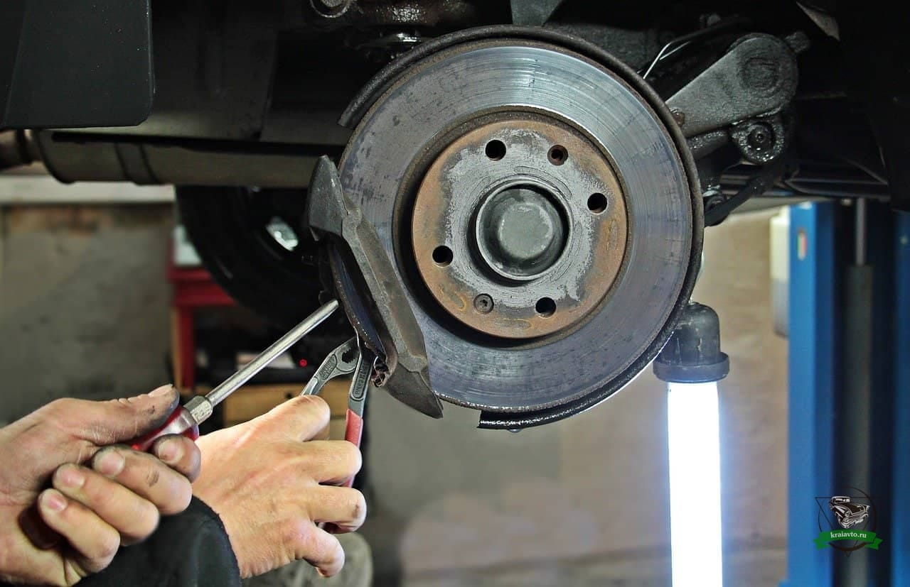
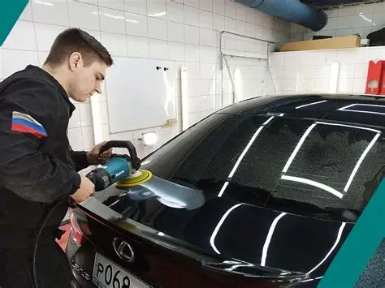
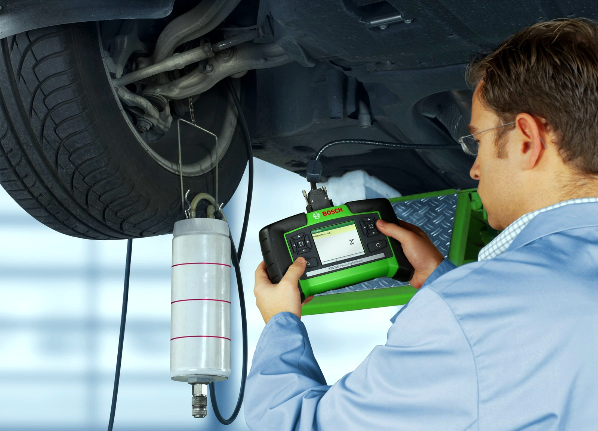
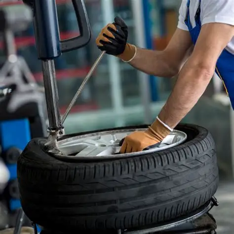

Мы гордимся качеством своей работы.
Посмотрите примеры выполненных ремонтов и обслуживания.
Каждая машина, покидающая наш сервис, проходит контроль качества.

Замена тормозных колодок

Полировка кузова после ремонта

Современное оборудование для диагностики

"Шиномонтаж в работе
Посмотрите, как проходит процесс диагностики в нашем сервисе.